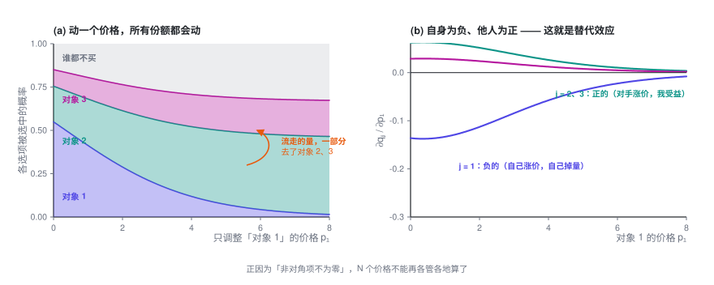
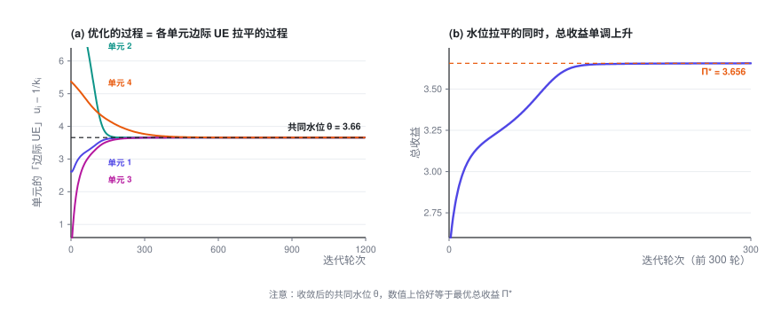
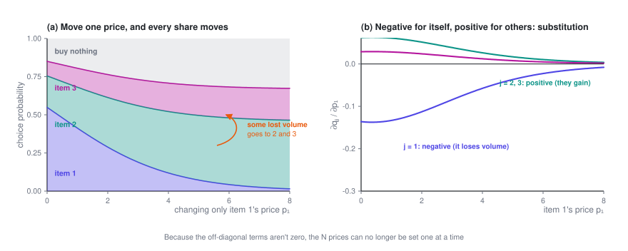
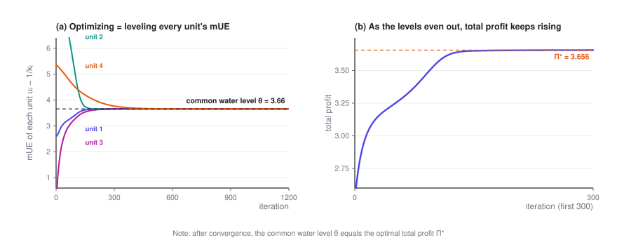

替代品的定价优化
把一个产品的价格抬上去，另一个的销量反而涨了——它们在抢同一批需求。一旦有了这种牵连，价格就不能再一个一个单独定。而最优解的形式意外地干净：所有产品的「边际 UE」，也就是多卖一单净赚多少，必须落在同一条水位线上。
定价专题 · 第 3 篇 / 共 4 篇 · 阅读约 13 分钟
前情提要：前两篇都假设「改一个单元的价格，不影响别的单元」。这一篇打破这个假设 —— 当用户面对的是一整张候选清单，这些候选会互相抢量。
本篇会用到的符号
| 符号 | 含义 |
|---|---|
| u_j = p_j - c_j | 候选项 j 的单均毛利 |
| b_j | 与价格无关的吸引力（品牌、口碑、评分……） |
| D | Logit 分母，D = 1 + \sum_m e^{\,b_m - k_m p_m} |
| q_j = e^{\,b_j-k_jp_j}/D | 选中候选项 j 的概率 |
| q_0 = 1/D | 什么都不买的概率 |
| \mathrm{mUE}_j | 边际 UE（marginal unit economics）：让 j 多卖一单净多赚多少，u_j - 1/k_j；文献里叫 adjusted markup |
完整符号表见专题目录。
1. 问题出在哪
前两篇所有内容都建立在一个假设上：改一个单元的价格，不影响别的单元的转化率。
真实场景往往不是这样。一个用户面前摆着的不是一个选项，而是一整张候选清单（一屏商品、一列套餐、一组车型、一批保险方案）。这时候：
你把清单里第 1 项的价格调高了，用户不一定就不买了——可能转头去买了第 2 项。
于是改一个价格，整张清单的转化率全都会变。
这个现象在不同领域有不同的叫法：
- 经济学里叫 交叉价格效应（cross-price effect），这些选项互为 替代品（substitutes）
- 零售 / 收益管理里叫 蚕食效应（cannibalization），即自家产品互相抢量
- 数学上，就是海森矩阵（或需求雅可比矩阵）的非对角项不再为零
第二篇开头说的三个解耦条件，这次破坏的是第三条。
2. 用离散选择模型描述它
标准工具是 多项 Logit 模型（Multinomial Logit, MNL）。
用户面对 N 个候选，外加一个「什么都不买」的选项。选中第 j 项的概率是：
- 分子：第 j 项自身的吸引力，价格越高越小
- 分母里那个孤零零的 1：外部选项（不购买）。它是整个模型的锚，没有它，涨价就只会导致用户在内部转移、总量永不下降，模型会失真
- b_j：与价格无关的吸引力（品牌、口碑、评分、交付速度……）
- k_j：第 j 项的价格系数
为书写方便，记：
q_0 就是「什么都没买」的概率，且显然 q_0 + \sum_j q_j = 1。
3. 先算导数：替代效应长什么样
这是后面所有推导的基础，一步步来。
自身导数（改 p_j 对 q_j 自己的影响）：
其中 \frac{\partial e_j}{\partial p_j} = -k_j e_j，而 \frac{\partial D}{\partial p_j} = -k_j e_j（D 里只有第 j 项含 p_j）。代入：
交叉导数（改 p_j 对别人 q_m 的影响，m \ne j）：
此时分子 e_m 与 p_j 无关，只有分母在变：
这两个式子就是「替代效应」的数学表达：自己涨价，自己掉量（负），别人受益（正）。

还有一个后面要用的量 —— 涨 p_j 对总成交量的影响：
很漂亮：涨价流失的量，最终只有漏到「什么都不买」那一档的部分才是真的丢了，内部转移不算损失。
4. 求最优解：旋钮的显式形式
目标函数（记单均毛利 u_j = p_j - c_j）：
对 p_j 求导。注意 p_j 有两条影响路径：直接影响自己的毛利 u_j，以及通过份额影响所有 q_m：
把导数代进去：
提出公因子 q_j：
把 (1-q_j) 展开：
注意中间两项可以合并 —— u_jq_j 正好把求和补成对所有 m 的求和：
令导数为零。因为 q_j > 0，方括号必须为零：
两边除以 k_j，整理：
这就是那个旋钮。
等式右边 \Pi 是总收益 —— 它跟 j 完全无关。也就是说：
在最优解处，所有候选项的 u_j - \frac{1}{k_j} 都相等，等于同一个常数。
我把这个量叫做该候选项的 mUE，全称 marginal unit economics，中文叫边际 UE：
UE（unit economics，单位经济）是业务里常说的「一单生意赚不赚钱」，「边际」指的是多卖的那一单。合起来，mUE 回答一个很实际的问题：让 j 多卖一单，净多赚多少钱？ 公式里的两项正好是这笔账的一收一支：
- 收：u_j = p_j - c_j，多卖的这一单本身的毛利。
- 支：1/k_j，为多卖这一单付出的代价。想让 j 多卖一单，就得把 j 的价格降一点，而这点降价会落到 j 已有的每一单上，合计让掉的钱正好是 1/k_j。用户越在意价格（k_j 越大），降一点价就能多卖不少，代价也就越小。
收减支，就是经济学里最基本的「边际收益减边际成本」（MR − MC）。严格说还有一笔对所有产品都一样的公共成本，比较时互相抵消，见下面的展开。
最优解的特征：所有候选项的 mUE 被拉平到同一条水位线上，而且这条水位线正好等于总收益 \Pi。 用上面这笔账来读，道理很直白：如果多卖 A 一单比多卖 B 一单更赚，就该把量从 B 挪给 A；只要各项之间还有高低，就还能这样挪，挪到各项相等才停。这就是经济学里的等边际原则。
展开：为什么说 mUE 就是「多卖一单的净收益」
换个角度：不把价格当决策变量，而把各候选项的份额 q_j 当决策变量，价格由 Logit 公式反解出来，p_j = \bigl(b_j - \ln(q_j/q_0)\bigr)/k_j。对 q_j 求导（其他候选项的份额不变）：
- 第一项就是 mUE：u_j 是多出来那一单的毛利；q_j 每提高一个单位，j 要降价 1/(k_jq_j)，作用在已有的 q_j 上，合计让掉 1/k_j。
- 第二项是「拉新」的公共成本：多卖的这一单来自原本什么都不买的人，要在其他候选项销量不变的前提下把他拉进来，所有价格（包括 j 自己）都得再降一点。这一项对每个 j 都一样，比较时互相抵消。
最优时每个 \partial\Pi/\partial q_j 都为零，所以所有 mUE 都等于同一个数，这就是拉平；和上面按价格求导的结果对照，这个数正是 \Pi。
文献里怎么叫。 这个量在学术文献里叫 adjusted markup（按价格敏感度调整后的加价），定义就是「价格 − 成本 − 价格敏感度的倒数」。Gallego 和 Wang（2014）在更一般的嵌套 Logit 模型下证明：最优时，同一个嵌套里所有产品的 adjusted markup 都相等。MNL 是嵌套 Logit 的特例，放到 MNL 下就是上面这条结论。Li 和 Huh（2011）则证明：在 MNL 下，即使各产品的价格系数不同，把总利润写成市场份额的函数后，它也是凹函数。所以一阶条件解出来的就是全局最优，不会停在局部极值上。本专题用 mUE 这个名字，因为它直接说出了这个量在经济上是什么：多卖一单的净收益。
记这个公共水位为 \theta^\star，那么每个价格立刻确定：
N 个价格，只剩下一个自由度。 给定 \theta^\star，全部价格一次算完，不需要任何迭代求根。
而 \theta^\star 满足一个一维不动点方程 \theta = \Pi(\theta)，其中 \Pi(\theta) 是按水位 \theta 定价时的总收益 —— 二分即可。

上图记录的是梯度上升的全过程：四个候选项从很离谱的初始价格出发，它们的 mUE 从四面八方收敛到同一条水位线上；与此同时总收益单调上升。收敛后我验证了一下，公共水位的数值恰好等于最优总收益（吻合到 10^{-14} 量级），正如公式所说。
加上量约束，结构不变。 这一点很重要，说明这个旋钮很稳健：
用第 3 节最后那个结论 \sum_m \partial q_m/\partial p_j = -k_jq_jq_0：
右边仍然与 j 无关。约束没有改变「mUE 必须拉平」这个结构，只是把水位整体压低了一点。
5. 怎么读这个结果
1/k_j 是「这个候选项天然该有的加价空间」。
它的单位就是钱。价格系数 k_j 越小（用户对这一项的价格越不在意），1/k_j 越大，这一项就该加更多的价。这和上一节那笔账是同一件事：用户越不在意价格，想多卖一单要让的钱就越多，不如少卖一点、把价定高。
最优定价 = 统一水位 + 各自的天然加价空间 + 各自的成本。
这句话可以直接讲给业务方听，而且很好接受：大家共享一个「基准盈利水平」，然后各自按「客户有多不在意价格」和「成本有多高」做偏移。
它给了一个可以直接用的诊断工具。
拿你现在线上的价格，算一遍每个候选项的 \mathrm{mUE}_j = (p_j - c_j) - 1/k_j，然后排序：
- mUE 明显高于其他项的 → 这一项定价偏高：多卖它一单比多卖别的更赚，该降价多卖
- mUE 明显低于其他项的 → 这一项定价偏低：多卖它一单不如别的划算，该提价，把量让给别人
- 极差越大，说明离最优越远，可优化空间越大
这个诊断不需要重新求解整个优化问题，一个 SQL 就能跑出来，非常适合做日常监控看板。
它也解释了「为什么不能一刀切地打折」。 全场统一打八折，每一项降掉的钱和它的原价成正比，贵的降得多、便宜的降得少；而 1/k_j 不会跟着变——原本拉平的 mUE 会被打散，离最优更远。正确的做法是移动水位，也就是所有 p_j 同时加减同样多的钱，而不是乘同一个折扣。
这是一个很反直觉、但很有用的结论：在这个模型下，「统一加减多少钱」不会破坏最优结构（只是移动了水位），「统一打几折」会。
定价专题 · 第 3 篇 / 共 4 篇
Pricing Substitutable Products
Raise the price of one product and another one sells more — they're competing for the same demand. Once prices are linked like this, you can no longer set them one at a time. Yet the optimum turns out to be surprisingly clean: every product's marginal unit economics, what one more sale of it nets you, has to sit at the same water level.
Price Optimization · Part 3 of 4 · 13 min read
← Pricing Many Items Under Constraints · Series index · Pricing at Scale →
Previously: the first two posts assumed that changing one unit's price doesn't affect any other unit. This post drops that assumption — when users face a whole list of options, those options take volume from each other.
Symbols used in this post
| Symbol | Meaning |
|---|---|
| u_j = p_j - c_j | Margin per order of option j |
| b_j | Appeal that has nothing to do with price (brand, word of mouth, ratings…) |
| D | Logit denominator, D = 1 + \sum_m e^{\,b_m - k_m p_m} |
| q_j = e^{\,b_j-k_jp_j}/D | Probability of choosing option j |
| q_0 = 1/D | Probability of buying nothing |
| \mathrm{mUE}_j | Marginal unit economics: how much more you net if j sells one more unit, u_j - 1/k_j (the adjusted markup in the literature) |
The full notation table is in the series index.
1. What changes
Everything in the first two posts rests on one assumption: changing one unit's price doesn't change any other unit's conversion rate.
Real life often isn't like that. A user rarely faces a single option; they face a whole list of candidates (a screen of products, a set of plans, a lineup of car models, a menu of insurance policies). And then:
Raise the price of the first item on the list, and the user doesn't necessarily walk away — they may simply buy the second item instead.
So change one price, and the conversion rate of every item on the list moves.
This effect goes by different names in different fields:
- In economics, it's the cross-price effect, and the options are substitutes
- In retail and revenue management, it's cannibalization: your own products taking volume from each other
- Mathematically, the off-diagonal entries of the Hessian (or the demand Jacobian) are no longer zero
Of the three decoupling conditions from the beginning of Part 2, this is the third one breaking.
2. Modeling it with a discrete choice model
The standard tool is the multinomial logit model (MNL).
The user faces N options plus a "buy nothing" option. The probability of choosing option j is:
- Numerator: option j's own appeal, which shrinks as its price rises
- The lone 1 in the denominator: the outside option (not buying). It anchors the whole model. Without it, a price increase could only push users from one option to another, total volume would never fall, and the model would be unrealistic
- b_j: appeal that has nothing to do with price (brand, word of mouth, ratings, delivery speed…)
- k_j: option j's price coefficient
To keep the notation short, write:
q_0 is the probability of buying nothing, and clearly q_0 + \sum_j q_j = 1.
3. The derivatives: what substitution looks like
Everything later builds on these, so let's go step by step.
Own-price derivative (how changing p_j affects q_j itself):
Here \frac{\partial e_j}{\partial p_j} = -k_j e_j, and \frac{\partial D}{\partial p_j} = -k_j e_j (only the j-th term of D contains p_j). Substituting:
Cross-price derivative (how changing p_j affects another option's q_m, with m \ne j):
The numerator e_m doesn't depend on p_j; only the denominator moves:
These two formulas are substitution written in math: raise your own price and you lose volume (negative); everyone else gains (positive).

One more quantity we'll need later — the effect of raising p_j on total volume:
A lovely result: of the volume that walks away after a price increase, only the part that leaks into "buy nothing" is really lost; moves between options don't count as losses.
4. Finding the optimum: the knob in explicit form
The objective (with margin per order u_j = p_j - c_j):
Differentiate with respect to p_j. Note that p_j acts through two channels: directly, on its own margin u_j; and through the shares, on every q_m:
Plug in the derivatives:
Factor out q_j:
Expand (1-q_j):
The two middle terms combine — u_jq_j is exactly what's missing to turn the sum into a sum over all m:
Set it to zero. Since q_j > 0, the bracket has to vanish:
Divide by k_j and rearrange:
That's the knob.
The right-hand side, \Pi, is total profit — it doesn't depend on j at all. In other words:
At the optimum, u_j - \frac{1}{k_j} takes the same value for every option.
I call this quantity the option's mUE, short for marginal unit economics:
Unit economics is the everyday business question of whether a single sale makes money, and "marginal" means the next sale. Put together, mUE answers a very practical question: if option j sells one more unit, how much more do you net? The two terms of the formula are the two sides of that ledger:
- In: u_j = p_j - c_j, the margin on the extra sale itself.
- Out: 1/k_j, what it costs to win that sale. To sell one more of j, you have to cut j's price a little, and that cut applies to every sale of j you were already making; in total it gives up exactly 1/k_j. The more users care about price (the larger k_j), the more a small cut sells, and the cheaper the extra sale.
In minus out is marginal revenue minus marginal cost (MR − MC), the most basic idea in economics. Strictly, there is also a shared cost that is the same for every product and cancels out in any comparison; see below.
What characterizes the optimum: every option's mUE is brought to the same water level, and that water level equals total profit \Pi. Read through the ledger above, the reason is plain: if one more sale of A nets more than one more sale of B, shift volume from B to A; as long as any two options differ you can keep shifting, and you stop only when they're all equal. This is the equimarginal principle of economics.
Show: why mUE is the net gain from one more sale
Look at it from another angle. Instead of prices, take each option's share q_j as the decision variable, with its price backed out of the logit formula, p_j = \bigl(b_j - \ln(q_j/q_0)\bigr)/k_j. Differentiate with respect to q_j, holding the other options' shares fixed:
- The first term is mUE: u_j is the margin on the extra sale, and each unit of extra share for j takes a price cut of 1/(k_jq_j), applied to the q_j sales you already had, for a total of 1/k_j.
- The second term is a shared cost of winning a new customer. The extra sale comes from someone who would otherwise have bought nothing, and pulling them in while keeping every other option's sales unchanged means every price (including j's) has to come down a little more. It's the same for every j, so it cancels out in any comparison.
At the optimum every \partial\Pi/\partial q_j is zero, so every mUE equals the same number, which is the leveling; comparing with the price-based derivation above, that number is \Pi.
What the literature calls it. In academic work, this quantity is called the adjusted markup: price minus cost minus the reciprocal of price sensitivity. Gallego and Wang (2014) prove, under the more general nested logit model, that at the optimum every product in the same nest has the same adjusted markup. MNL is a special case of nested logit, and applied to MNL, their result is exactly the one above. Li and Huh (2011) prove that under MNL, even when products have different price coefficients, total profit is concave once you write it as a function of market shares. So the solution of the first-order conditions is the global optimum, not a local one. This series uses the name mUE because it says directly what the quantity means economically: the net gain from one more sale.
Call the common water level \theta^\star. Every price then follows immediately:
N prices, but only one degree of freedom left. Given \theta^\star, every price comes out in a single pass, with no iterative root-finding.
And \theta^\star satisfies a one-dimensional fixed-point equation, \theta = \Pi(\theta), where \Pi(\theta) is total profit when prices are set at water level \theta — bisection does the job.

The figure above records a full run of gradient ascent: four options start from wildly wrong prices, and their mUEs converge from every direction onto the same water level while total profit climbs steadily. After convergence I checked, and the common water level equals the optimal total profit (to within 10^{-14}), exactly as the formula says.
Add a volume constraint and the structure stays the same. This matters — it shows how robust the knob is:
Using the last result of Section 3, \sum_m \partial q_m/\partial p_j = -k_jq_jq_0:
The right-hand side still doesn't depend on j. The constraint doesn't change the "level every mUE" structure; it just lowers the water level a little.
5. How to read the result
1/k_j is the markup an option naturally has room for.
It's measured in money. The smaller the price coefficient k_j (the less users care about this option's price), the larger 1/k_j, and the more markup the option should carry. It's the ledger from the previous section seen from the other side: when users care little about price, winning one more sale means giving up a lot, so it pays to sell a bit less at a higher price.
Optimal price = common water level + the option's own natural markup + its own cost.
You can say this sentence to a business audience as is, and it's easy to accept: everyone shares one "baseline level of profitability", and each option shifts away from it according to how little its customers care about price and how much it costs.
It gives you a diagnostic you can use right away.
Take your current live prices, compute each option's \mathrm{mUE}_j = (p_j - c_j) - 1/k_j, and sort:
- mUE clearly above the rest → the option is overpriced: one more sale of it nets more than one more sale of anything else, so cut its price and sell more
- mUE clearly below the rest → the option is underpriced: one more sale of it is worth less than elsewhere, so raise its price and let the volume go to others
- The wider the spread, the farther you are from the optimum, and the more there is to gain
This check doesn't require re-solving the optimization problem. A single SQL query does it, which makes it a great fit for a daily monitoring dashboard.
It also explains why blanket discounts are a bad idea. A storewide 20% discount cuts each price by an amount proportional to its original price — expensive items drop a lot, cheap ones only a little — while 1/k_j stays put. The mUEs that were level get scattered, and you end up farther from the optimum. The right move is to shift the water level: add the same amount of money to every p_j, or take the same amount off, instead of multiplying them all by the same discount.
A counterintuitive but useful result: in this model, moving every price by the same amount keeps the optimal structure intact (it only shifts the water level); applying the same percentage discount doesn't.
Price Optimization · Part 3 of 4
← Pricing Many Items Under Constraints · Series index · Pricing at Scale →